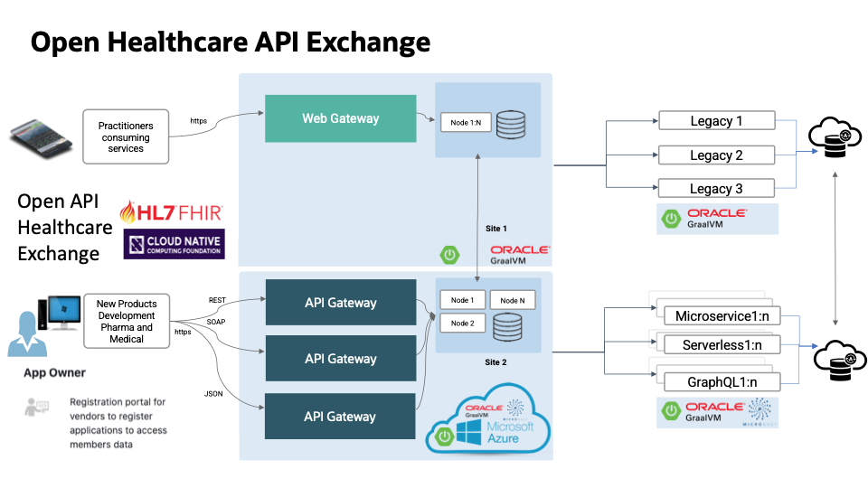
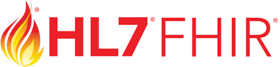
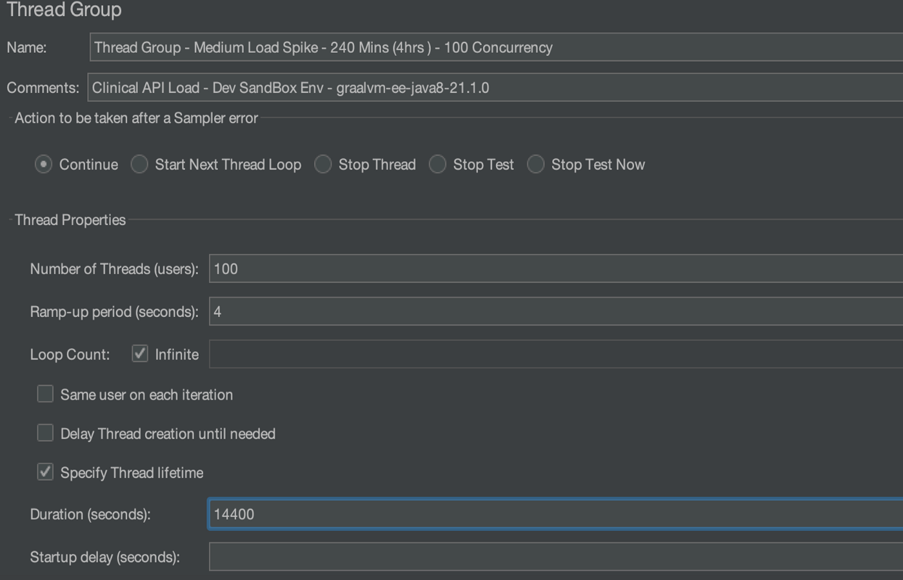
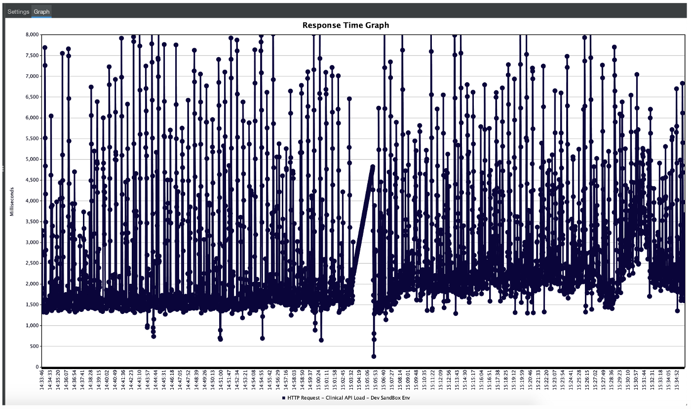
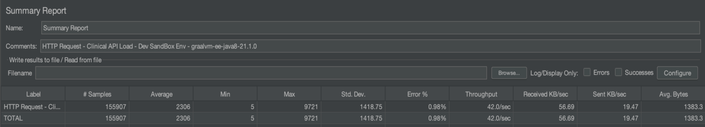
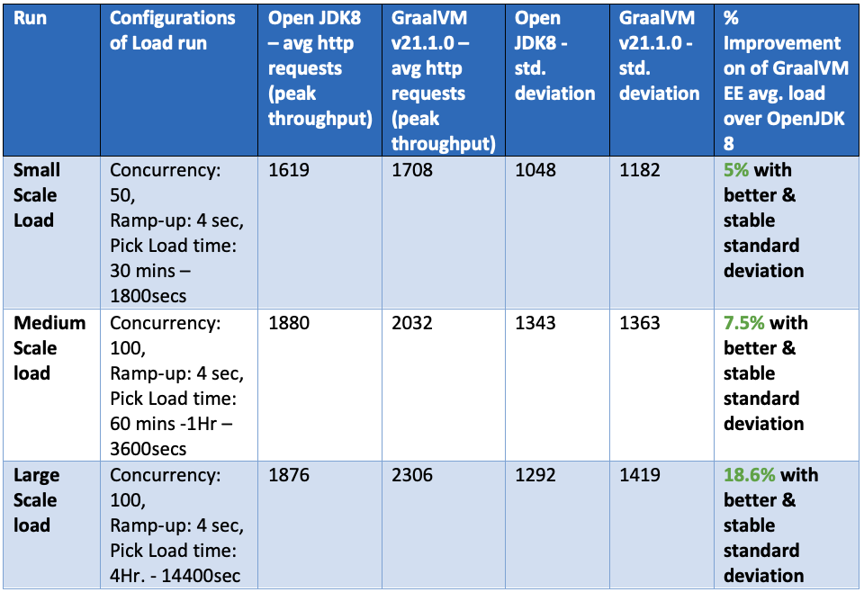

<div class="initial-content">
  <div id="main" role="main">

  <article class="page has-sidebar" itemscope itemtype="https://schema.org/CreativeWork">
    <meta itemprop="headline" content="Modernizing the Healthcare platform with a GraalVM Proof of Value">
    
    <meta itemprop="datePublished" content="2021-11-24T10:11:00+00:00">
    


    <header>
      <h1 id="page-title" class="page__title" itemprop="headline">Modernizing the Healthcare platform with a GraalVM Proof of Value
</h1>
      


    </header>

    <section class="page__content" itemprop="text">
      

        <picture class="alignright">
                <source srcset="assets/modernize-healthcare-ambulance.jpeg 1x" />
                
            </picture>

<p>Imagine a Fortune 5 company, empowering millions of people worldwide with the information, guidance, and tools to make personal health choices, setting  out to work on two parallel streams for modernizing their HealthCare platform’s Cloud-Native tech stack.</p>

<ul>
  <li>
    <p><strong>Stream 1</strong>: Existing Microservices comprise Java 8 + Spring + OpenJDK JIT as JRE, to be containerized in a Hybrid Cloud platform.</p>
  </li>
  <li>
    <p><strong>Stream 2</strong>: New Microservices with Kotlin + SpringBoot + OpenJDK 11 / GraalVM JIT, to be containerized in a Public Cloud platform.</p>
  </li>
</ul>

<h2 id="tactical-solution--just-in-time-with-stream-1">Tactical Solution — just-in-time with Stream 1:</h2>

<ul>
  <li>Lift and Shift Stream 1 from existing Hotspot JIT to GraalVM JIT</li>
  <li>Evaluate memory footprint, execution time improvement, and peak throughput with GraalVM</li>
  <li>Benchmark Stream 1 with GraalVM JIT vs HotSpot JIT on performance heuristics</li>
  <li>Endurance Testing with business-critical Healthcare API for benchmarking</li>
</ul>

<h2 id="strategic-solution--ahead-of-time-with-stream-2">Strategic Solution — ahead-of-time with Stream 2:</h2>

<ul>
  <li>Application re-writes are planned and primarily targeted for the Public Cloud Platform</li>
  <li>Stream 2 tech stack is being considered with GraalVM Enterprise as an option depending on the outcome of Stream 1 benchmarking results</li>
  <li>Serverless (initial thoughts) has got some excitement for GraalVM’s Native-Image due to memory footprint and cold-startup optimization</li>
</ul>

<picture class="">
                <source srcset="assets/modernize-healthcare-api-exchange.png 1x" />
                
            </picture>

<h2 id="healthcare-context">Healthcare Context</h2>

<p>Interoperable healthcare IT enables clinicians to improve care coordinations and ensure that the information available to view in the healthcare services is part of a practitioners’ workflow.</p>

<p>In terms of the technology stack, here are some considerations and goals:</p>

<ol>
  <li>Huge employee base, hundreds of APIs, and countless integrations and external systems</li>
  <li>Optimize healthcare technology in order to provide a scalable tech infrastructure</li>
  <li>Eliminate Local Resource Constraints for Building Cloud-Native Applications</li>
  <li>Implement patterns and practices defined by DevOps and Cloud Centre of Excellence</li>
</ol>

<h3 id="support-for-open-healthcare-standards">Support for Open Healthcare Standards</h3>

<p>HL7 FHIR is a standard for health care data exchange published by HL7 (HL7 and its members provide a framework for the exchange, integration, sharing, and retrieval of electronic health information).</p>

<p>The CNCF Cloud Native Computing Foundation serves as the vendor-neutral home for many of the fastest-growing open-source projects</p>

<picture class="">
                <source srcset="assets/modernize-healthcare-hl7r.png 1x" />
                
            </picture>

<h2 id="research-and-evaluation-proof-of-value">Research and Evaluation Proof of Value</h2>

<p>The engineering team identified key Proof-of-Value initiatives to optimize the existing tech stack with GraalVM without code changes, iteratively running performance loads with identified heuristics, benchmark observations, and comparisons. Initial performance load on GraalVM and benchmarking it against conventional JDKs (OpenJDK) for feasibility analysis. This included two rounds for performance evaluation.</p>

<p>As a leading healthcare company (Fortune #5), the peak season is typically at the start of the year for all health plans renewables in the US, hence the priority at that time was to support business peak load in tech frozen state for 1–2 months. This resumed towards the end of Q1 2021.</p>

<h3 id="graalvm-ee-v21x-on-jdk8">GraalVM EE v21.x on JDK8</h3>

<p>Actual load runs on Dev Environment Sandbox.</p>

<p>Load Configuration Details:</p>

<ul>
  <li>Concurrency: 100 users</li>
  <li>Ramp-up: 4 seconds</li>
  <li>Duration: 4 hours, 14400 seconds</li>
</ul>

<p>The Clinical API was subjected to a medium spike load as part of the warm-up phase and peak throughput phase.</p>

<picture class="">
                <source srcset="assets/modernize-healthcare-load-test.png 1x" />
                
            </picture>
<picture class="">
                <source srcset="assets/modernize-healthcare-responsetimegraph.png 1x" />
                
            </picture>
<picture class="">
                <source srcset="assets/modernize-healthcare-summary-report.png 1x" />
                
            </picture>

<p>The evaluation results are summarized in the table below. GraalVM performed better than Open JDK8 in most of the runs and gets better for longer runs.</p>

<picture class="">
                <source srcset="assets/modernize-healthcare-perform-characteristics.png 1x" />
                
            </picture>

<h2 id="conclusion">Conclusion</h2>

<p>This collaboration has been mutually beneficial. Specfically, from learning about the implications of GraalVM in the healthcare domain by optimizing its workflow and improving patient outcomes and experience.</p>

<p>To learn more and get started with GraalVM, visit https://www.oracle.com/graalvm</p>

<p>Thanks to Pratik Prakash, Senior Member of Engineering at UnitedHealth Group, and Amitpal Singh Dhillon, Regional Director for Oracle Labs in Asia-Pacific &amp; Japan, for their help in writing this blog post.</p>


          <div class="sidebar sticky">
    <!-- <p><strong>Tags:</strong> <span class="tags">

            
            <a class="animated-link tag" href="/topics/graalvm">graalvm</a>
            <a class="animated-link tag" href="/topics/devops">devops</a>
            </span>
    </p> -->
  


<div itemscope itemtype="https://schema.org/Person">

  

  <div class="author__content">
    
      <a href="https:/lmukadam.medium.com"><h3 class="author__name" itemprop="name">Ali Mukadam</h3></a>
    
    
      <div class="author__bio" itemprop="description">
        <p>For the past 16 years, Ali has held technical presales, architect and industry consulting roles in BEA Systems and Oracle across Asia Pacific, focusing on middleware and application development. Although he pretends to be Thor, his real areas of expertise are Application Development, Integration, SOA (Service Oriented Architecture) and BPM (Business Process Management).</p>

      </div>
    
  </div>

  <div class="author__urls-wrapper">
    <ul class="author__urls social-icons">
      

      

      

      

      

      

      

      
        <li>
          <a href="https://www.linkedin.com/in/alimukadam" itemprop="sameAs" rel="nofollow noopener noreferrer">
            <i class="fab fa-fw fa-linkedin" aria-hidden="true"></i><span class="label">LinkedIn</span>
          </a>
        </li>
      

      

      

      

      

      

      

      

      

      

      

      

      

      

      

      

      

      

      

      
    </ul>
  </div>
</div>

  
  
  

  </div>


      </section>

      <footer class="page__meta">
        
        


        

  <p class="page__date"><strong><i class="fas fa-fw fa-calendar-alt" aria-hidden="true"></i> Updated:</strong> <time datetime="2021-11-24T10:11:00+00:00">November 24, 2021</time></p>


      </footer>
    </div>

  </article>
</div>

</div>

